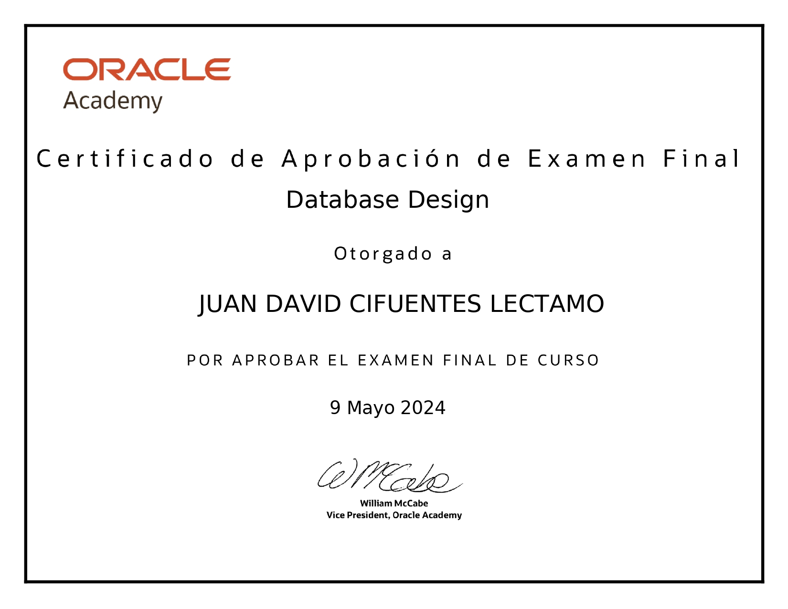

Curso Oracle Database Administrator
Completado en mayo 2024. Este curso ofrecido por Oracle Academy ha proporcionado una comprensión profunda y aplicada de los principios y prácticas de diseño de bases de datos. Por medio del abarque de los siguientes temas:
- Instalación, configuración y mantenimiento de bases de datos Oracle.
- Seguridad y gestión de usuarios.
- Optimización del rendimiento y tuning de consultas.
- Respaldo, recuperación y gestión de incidencias.
- Automatización de tareas administrativas mediante scripts y herramientas.
Gracias a este curso, aprendi a aplicar conceptos fundamentales como la normalización de bases de datos, la creación de esquemas adecuados y la implementación de relaciones entre tablas. Además, me adentro en el uso de herramientas avanzadas para garantizar la integridad y seguridad de los datos, aspectos esenciales para cualquier infraestructura de bases de datos en entornos empresariales. Mejorando sustancialmente la gestión y disponibilidad de bases de datos críticas en diversos entornos.
Certificado Obtenido
